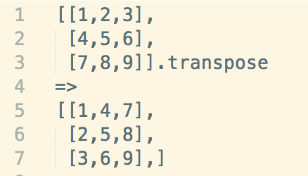
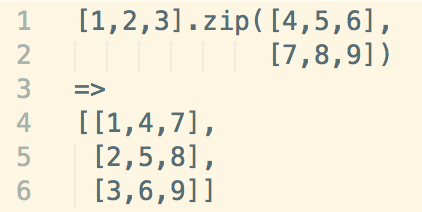

What Are They?(In context of Array)
Zip and Transpose are Array methods that modify the elements in the array. This post will deal the the differences of each.
Transpose:
Functionally, .transpose() requires nested arrays within an array. By calling transpose upon the parent array, all nested arrays columns and rows will be switched. It's best if you view the nested arrays as a table format to get a better picture. See the image below.(Please forgive the extra coma on line 7)
Zip:
.zip() takes a normal array and will merge its elements with corresponding elements of each argument array based off the index of each element. Take a look below.
While there are definitely similarities betwen the two methods zip and transpose(most notably being the data structure we return), we can see that the methods differ by the data structure they are called upon.